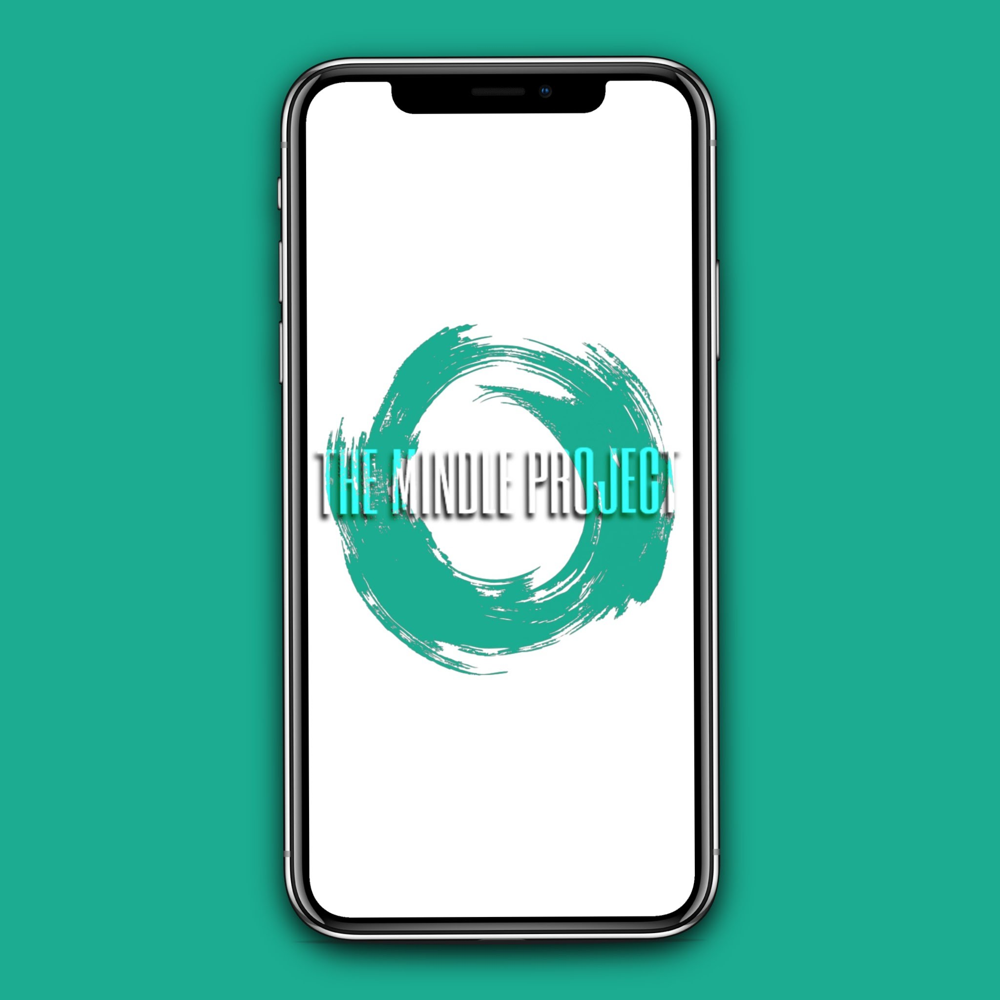

<!--
  Generated template for the HomePage page.

  See http://ionicframework.com/docs/components/#navigation for more info on
  Ionic pages and navigation.
-->
<ion-header>

  <ion-navbar>
    <ion-buttons left>
      <button ion-button icon-only>
        <ion-icon name="camera"></ion-icon>
      </button>
    </ion-buttons>
    <ion-title>Instagram</ion-title>
    <ion-buttons right>
      <button ion-button icon-only>
        <ion-icon name="ios-navigate-outline"></ion-icon>
      </button>
    </ion-buttons>
  </ion-navbar>

</ion-header>


<ion-content>
  <ion-scroll scrollX="true" zoom="false">
    <div class="story" *ngFor="let story of fakestories">
      <div class="storyphoto">
        
      </div>
      <div class="storyname">
        <p>nen.e_</p>
      </div>
    </div>
  </ion-scroll>
  <div class="postcard">
    <div class="cardhead">
      <div class="profileimage">
        
      </div>
      <div class="profilename">aa</div>
      <div class="postoptions">
        <button ion-button icon-only round>
          <ion-icon name="more"></ion-icon>
        </button>
      </div>
    </div>
    <div class="cardbody">
      
    </div>
    <div class="cardfooter">
      <div class="postengage">
        <div class="controls">
          <button ion-button icon-only round>
            <ion-icon name="ios-heart-outline"></ion-icon>
          </button>
          <button ion-button icon-only round>
            <ion-icon name="ios-text-outline"></ion-icon>
          </button>
          <button ion-button icon-only round>
            <ion-icon name="ios-send-outline"></ion-icon>
          </button>


        </div>
        <div class="savepost">
          <button ion-button icon-only round>
            <ion-icon name="ios-bookmark-outline"></ion-icon>
          </button>

        </div>
      </div>
      <div class="postcomments">aa</div>
    </div>
  </div>
</ion-content>
